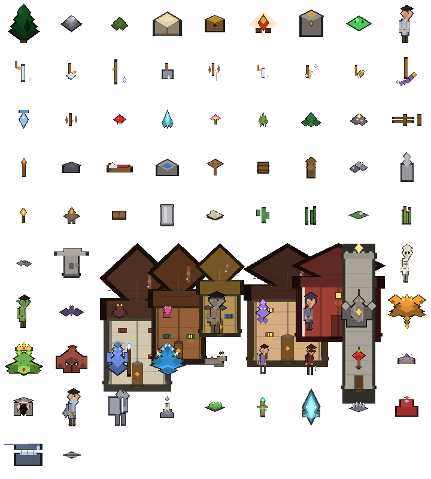

1. The Elements
Every sprite in Starfall is an element: a small Rust file in
game/src/elements/ that returns a list of Part primitives
(diamonds & vertical quads). Below are all 45, rendered to transparent PNGs by the
gen_pngs tool. (Checkerboard = transparency.)
Terrain & Decor ambient
Harvestable Resources gather
Buildable Structures place with Q
Enemies combat
Bosses & Avatars endgame
Full Sprite Sheet

720×400 montage — every element centred in an 80×80 cell, 9 per row.
2. How the Game Works
Architecture
Two Rust crates share the repo:
- game — pure logic & art: world generation, entities, combat, quests, items,
and every
elements/*.rssprite. No browser APIs. - web — the host. It owns the
App(the live game state), runs the fixed-timestep loop, reads keyboard / mouse / touch input, and draws each frame.
wasm-pack compiles the web crate to WebAssembly, which the static
index.html loads. The result is served as plain static files — no server code.
Rendering — a 2.5D software rasterizer
Each entity is described by Parts: isometric diamonds (the flat tops)
and axis-aligned vertical quads (trunk, walls, bodies). prim::rasterize
flattens them into triangle vertices, emitting a dark “skirt” copy first to fake
2.5D depth, then the bright pass. Those vertices are drawn to the on-screen 2D canvas
(#blit), composited back-to-front by an isometric depth sort.
This is why adding art is cheap: drop a new file in elements/, return some
Parts, register it in mod.rs + the dispatch match, and it appears.
World & biomes
The world is an infinite, chunk-streamed map. The terrain is produced by layered
value noise (FBM) driven by a single integer seed — so the same seed always yields
the exact same world, and a different seed yields a wholly different one. A ChunkCache
generates 32×32 tiles on demand as the camera moves and keeps the most-recently-visited chunks
(LRU eviction), so exploration never regenerates or pops under you.
Biomes fall out of three noise fields — elevation, moisture, and temperature:
- Water / Sand / Grass / Forest / Swamp / Stone / Snow — the core set, each with its own colour, walker rules, harvest nodes, and enemy spawns.
- Tundra — cold, barren grassland (temperature just above the snow line): rocks and flowers, haunted by Wraiths and Goblins.
- Desert — arid lowlands (very low moisture): rare Crystals and rocks, home to Skeletons and Spiders.
Intra-biome detail (deterministic swaps between sibling tiles) and carved rivers keep regions from looking flat, and never introduce water or break spawn/POI placement. Scattered Points-Of-Interest include the ruins (with a chest), the altar where you woke, an anvil, and the ruin tower. Harvestable nodes (trees, rocks, crystals, mushrooms, ore) are placed per-biome.
Seeds: from the boot menu you can type a numeric seed or any word (hashed to a seed) to spawn a specific world; leaving it blank rolls a random one. The active seed is shown in the HUD and saved with your run, so Continue always restores the same world.
Biome mechanics: the tile you stand on matters. Snow and Swamp slow your movement (snow ~30% slower), and the harsh Tundra / Desert drain hunger faster and regenerate stamina more slowly (exposure) — shelter by a light source still protects you. Your current biome and seed are shown in the HUD, and the minimap has a colour legend naming every biome.
Player systems
| System | What it does |
|---|---|
| Movement | WASD / arrows; speed scales with stamina and a dodge burst. |
| Stamina | Spent on attacking, shooting, and dodging; regenerates over time. |
| Hunger | Drains slowly; eat food (C) to recover HP regen. |
| Dodge roll | Space — brief burst of speed with i-frames, costs stamina, has a cooldown. |
| Day / night | A clock tints the world and affects lighting from braziers/torches. |
Combat
- Melee (
J): a short swing arc in front of the player. - Ranged (
K): fires an arrow in your facing direction. - Enemy AI: states of idle → chase → attack → flee, with melee reach and (for the Stoneslinger) a ranged shot that damages the player. The Brute instead winds up, then charges in a straight-line dash at high speed.
- Bosses: the Forest Warden and the Colossus use the same AI at larger scale and never respawn.
Crafting
Build an anvil, then open the inventory (I) to craft:
- Honed Tools — +harvest yield.
- Iron Plate — reduces damage taken.
- Healing Salve (×3) — press
Rto heal. Crafting bonuses persist across saves.
Quests & the two endings
A tiny FSM (QuestLog) advances through 8 stages: gather → shelter → first kill
→ find ruins → open chest → defeat the Warden → recover the Crown Fragment → reforge at the
altar. Two endings exist:
- First ending — reforge the Crown after beating the Warden: “The Star Crown blazes.”
- True ending — also defeat the Colossus (it drops the second fragment): “The Twin Star Crowns blaze.” This ending is hard-gated: choosing to Reign only yields the first ending unless the Colossus has actually been slain first.
Save / Load
The game autosaves to localStorage every 8 seconds and on page hide. Saves
capture inventory, placed structures, depleted harvest nodes, boss kills, quest stage,
day/night time, and crafting bonuses — so a reloaded world feels continuous.
Minimap
A 33×33 terrain readback with markers for the player, altar, ruins, and enemies is drawn to a small canvas in the corner each tick.
Bestiary / Codex
Press L to open the Bestiary. It lists every enemy kind you have defeated
(tracked in discovered and saved to localStorage), each with its
HP, damage, behaviour, and drops. The HUD shows a MOBS count of live enemies.
Weather
Periodically the world turns to rain (🌧) or snow (❄). Weather is mostly atmospheric — diagonal rain streaks or drifting snowflakes fall over the scene, and a night vignette darkens the edges so campfires and lanterns read as the only light — but being wet slows stamina regen and nudges hunger up. A looping wind/rain ambience plays while a storm lasts. Each storm ends after 20–40s.
Structures & crafting
Beyond the original buildables you can raise a Spike Trap (X) — enemies
crossing its tile take continuous damage — and a Farm Plot (U): stand
next to it and press E to harvest Food once its crops have regrown (a ~30s
timer). An Anvil lets you craft Honed Tools, Iron Plate (also a quest step),
Healing Salve, and Cook Meal (2 Herb → 2 Food). Crafting bonuses persist across
saves.
Controls
| Key | Action |
|---|---|
W A S D | Move |
J | Melee attack |
K | Shoot arrow |
Space | Dodge roll |
E | Interact / harvest |
Q | Toggle build mode (pick a recipe in the inventory, click to place, Esc exits) |
I | Inventory & crafting |
C | Eat food |
R | Use healing salve |
Z | Sleep until dawn (restore) |
P | Screenshot (saves a PNG of the canvas) |
Touch / mobile: on touch devices an on-screen D-pad plus action buttons (attack, shoot, dodge, eat, salve, sleep, build, inventory, screenshot) appear, and a build-mode banner shows while placing structures.
Regenerating the art
The PNGs on this page are produced by the offline tool:
cargo run -p game --bin gen_pngs
It calls elements::preview_elements() (which builds every sprite and returns
flat triangle vertices) and rasterizes each into element_previews/.